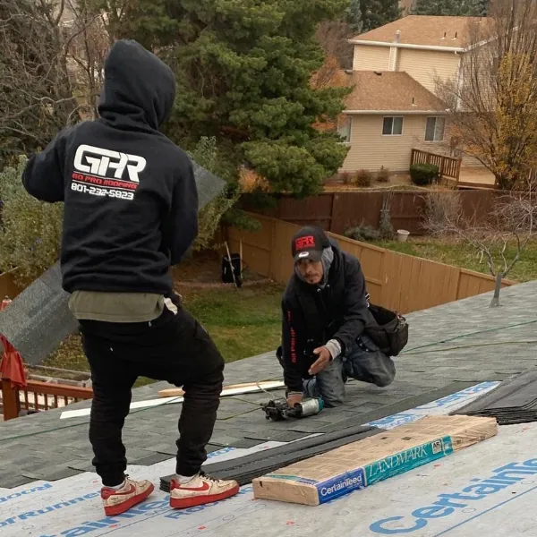

Protecting Utah Homes with Quality Roofing That Lasts
Go Pro Roofing is a locally owned, Master Roofer Certified company serving West Valley City and the entire Salt Lake Valley. Whether you need a roof replacement, shingle repair, or a professional roof inspection for your home or business, our certified and insured team is here to deliver the quality you can count on. We specialize in asphalt shingle roofing built to withstand Utah’s unique weather conditions, backed by 5-year workmanship and up to 50-year material warranties. When homeowners search for trusted asphalt roofing contractors or reliable asphalt roofing companies, they turn to us for proven expertise and long-lasting results.
Owens Corning Preferred Contractor • CertainTeed Certified • GAF Authorized
• Latino-Owned • Licensed & Insured
Schedule your free roof inspection today and protect your property with confidence.
What Our Customers Say

Why Ignoring Roof Problems Costs More Than You Think
A leaking or aging roof isn’t just an inconvenience. Left unchecked, water damage spreads into walls, insulation, and electrical systems, leading to repairs that cost thousands more than a timely roof replacement. Ignoring cracked or missing shingles also risks mold growth, structural rot, and reduced property value. What this really means is that a slight delay today can become a major financial burden tomorrow. For more guidance, read our blog on 5 signs your roof needs attention.
The Benefits of Choosing Asphalt Shingle Roofing
✔️ Certified Experts
Our Master Roofer Certified crew installs every roof with precision and care. As a trusted asphalt shingle roofing contractor, we ensure every project meets the highest standards.
✔️ High-Quality Materials
We partner with Owens Corning, GAF, and CertainTeed to provide shingles proven to last. Discover popular Owens Corning shingle colors to match your home’s style.
✔️ Warranty Protection
Enjoy 5-year workmanship coverage, plus a manufacturer’s warranty of up to 50 years.
✔️ Local Knowledge
We understand Utah’s climate and install roofs designed to handle snow, wind, and summer heat.
Why Choose Go Pro Roofing
Trusted Across West Valley City, the Salt Lake Valley, and Utah
Over 15 years of hands-on roofing experience
Master Roofer Certified
Owens Corning, GAF, and CertainTeed recognition
5-Year Workmanship Warranty • 50-Year Material Warranty
Latino-owned, locally trusted, family values
Hundreds of 5-star customer reviews from Utah homeowners looking for shingle roof contractors
Discover more about Go Pro Roofing and our dedication to serving local families.
Our Core Roofing Services
Whether you need a quick repair or a complete roof installation, we’ve got you covered:
Residential Roofing – Protect your home with quality shingles and reliable installation
Roof Replacement – Upgrade old or failing roofs with durable, warrantied solutions
Roof Repairs – Fix leaks, missing shingles, and storm damage quickly and effectively
New Roof Construction – Full installations for new builds and remodels
Official Roof Inspections – Certified reports for home buying or selling
Commercial Roofing – Flat, TPO, and membrane roofing for businesses
Photo Gallery


Frequently Asked Questions
Serving the Salt Lake Valley
We are proud to be based in West Valley City and provide asphalt shingle roofing services across the Salt Lake Valley and surrounding Utah communities.
“Proudly serving West Valley City, Salt Lake City, and the greater Salt Lake Valley.”
Explore our roofing gallery to view examples of our work throughout the region.
Ready to Protect Your Home With Reliable Roofing?
Ready to Get Reliable Asphalt Shingle Roofing Services?
From the first inspection to the final nail, Go Pro Roofing is committed to protecting homes and businesses throughout West Valley City and the Salt Lake Valley. Our goal is straightforward: to deliver dependable roofs, honest service, and long-term peace of mind to every customer who chooses Go Pro Roofing as their trusted asphalt shingle roofing contractor.
Or return to our homepage for more information.